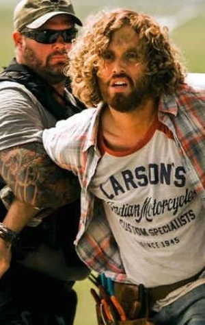
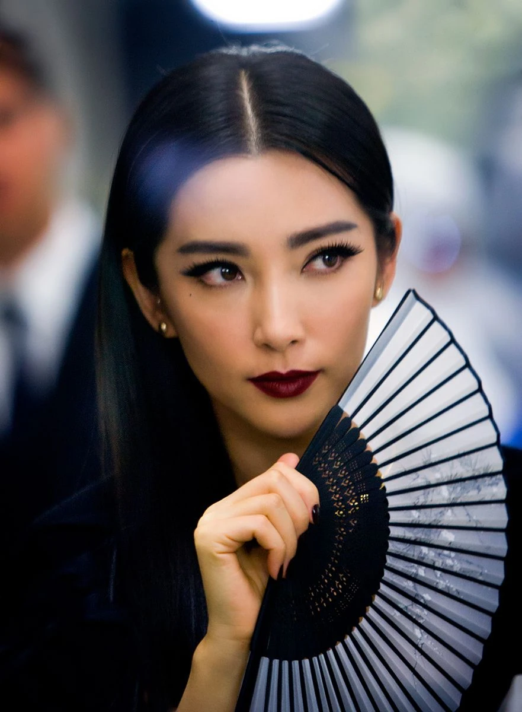

| Personaggio |
Descrizione |
Immagine |
| Cade Yeager |
Interpretato da Mark Wahlberg.
Cade è un padre single che vive con la figlia Tessa. Dopo la morte della moglie, ha promesso di proteggerla a ogni costo.
Nonostante sia spesso imprudente e poco responsabile. Inventore autodidatta. Passa il tempo a costruire macchinari e prototipi,
ma nessuno dei suoi progetti gli ha mai portato successo economico. |
 |
| Tessa Yeager |
Interpretata da Nicola Peltz.
Tessa è una ragazza determinata, intelligente e sensibile. Cresciuta senza madre, ha un rapporto molto stretto ma anche conflittuale con Cade,
che tende a essere iperprotettivo. La sua presenza mette in luce il tema della famiglia e della fiducia.
Cade deve imparare a lasciarla crescere e a rispettare le sue scelte. |
 |
| Shane Dyson |
Interpretato da Jack Reynor.
Shane è un pilota da rally irlandese, abituato a vivere situazioni di rischio e velocità.
Ha un carattere determinato e protettivo, soprattutto nei confronti di Tessa.
|
 |
| Lucas Flannery |
Interpretato da T.J. Miller.
Lucas è un tecnico e inventore dilettante che lavora con Cade. Ha un atteggiamento sarcastico e opportunista,
spesso più interessato a guadagnare soldi facili che a costruire qualcosa di duraturo.
Funziona come spalla comica, alleggerendo i toni cupi della trama. La sua ironia e il suo cinismo creano contrasti con la serietà di Cade. |
 |
| Joshua Joyce |
Interpretato da Stanley Tucci.
Joshua è un brillante imprenditore e scienziato, visionario ma arrogante. Crede di poter controllare la tecnologia dei Transformers e
piegarla alle esigenze dell’umanità. La sua azienda collabora con la CIA e con Harold Attinger per creare un esercito di Transformers artificiali.
|
 |
| Harold Attinger |
Interpretato da Kelsey Grammer.
Attinger è un uomo di potere, freddo e calcolatore. Crede che i Transformers siano una minaccia per l’umanità e
giustifica le sue azioni come necessarie per la sicurezza nazionale. |
 |
| James Savoy |
Interpretato da Titus Welliver.
Savoy è un militare pragmatico e violento, fedele ad Attinger e convinto che i
Transformers siano una minaccia da eliminare. Non mostra scrupoli morali e agisce con determinazione.
|
 |
| Su Yueming |
Interpretata da Li Bingbing.
Su Yueming è una donna d’affari pragmatica e determinata. Ha un ruolo importante nella gestione
della sede cinese della KSI e incarna la dimensione internazionale della trama. |
 |
Autobot
| Personaggio |
Descrizione |
Immagine |
| Optimus Prime |
Doppiato da Peter Cullen
Leader degli Autobot, simbolo di giustizia e speranza. In questo film Optimus appare più cupo e disilluso.
Dopo la battaglia di Chicago e il tradimento degli umani, è ferito non solo fisicamente ma anche moralmente.
Tuttavia, resta fedele alla sua missione di proteggere la Terra e i suoi abitanti.
Si transforma in un Western Star 4900 Phantom Custom. Combatte con Spada e scudo energetici. |
 |
| Bumblebee |
Guerriero fedele e protettore degli umani, secondo in comando dopo Optimus.
Giovane, impulsivo e coraggioso. Ha un atteggiamento ribelle ma resta sempre leale agli Autobot e agli umani.
Parla usando la radio questo tratto lo rende unico e più “umano”, perché esprime emozioni attraverso scelte musicali e citazioni.
Si transforma in una Chevrolet Camaro Concept gialla con dettagli neri. Possiede una Grande agilità in combattimento, cannoni integrati
e capacità di trasformarsi rapidamente. |
 |
| Hound |
Viene doppiato da John Goodman.
Soldato veterano degli Autobot, pesantemente armato e sempre pronto alla battaglia.
Burbero, ironico e un po’ sopra le righe. Ama le armi e non perde occasione di vantarsi del suo arsenale.
Nonostante il tono comico, è un combattente leale e determinato. Si transforma in un veicolo militare Oshkosh Defense.
Porta con sé un vasto assortimento di armi da fuoco e granate, tanto da sembrare un arsenale ambulante. |
 |
| Drift |
Viene doppiato da Ken Watanabe.
Guerriero disciplinato e maestro di spada, parte della nuova squadra di Optimus Prime.
Filosofico, riflessivo e guidato da un forte senso dell’onore. È severo con sé stesso e con gli altri, incarnando la figura del samurai
che ha abbandonato la via oscura dei Decepticon per seguire Optimus.
Si transforma in una Bugatti Veyron Grand Sport Vitesse. Combatte con Katane e shuriken meccanici. È un combattente corpo a corpo eccezionale,
con uno stile che richiama le arti marziali. |
 |
| Crosshairs |
Viene doppiato da John DiMaggio.
Tiratore scelto e combattente acrobatico degli Autobot.
Sarcastico, indipendente e spesso polemico. Non ha la disciplina di Drift né la serietà di Optimus,
ma compensa con abilità e coraggio. È il “outsider” del gruppo, che ama fare le cose a modo suo.
Si transforma in una Chevrolet Corvette C7 Stingray verde, elegante e sportiva. Specialista in combattimenti acrobatici e armi da fuoco.
Il suo stile è più “da cecchino” e da guerrigliero urbano, rispetto ai combattenti pesanti come Hound. |
 |
Dinobot
| Personaggio |
Descrizione |
Immagine |
| Grimlock |
Leader dei Dinobot, il più grande e potente tra loro.
Selvaggio, indomabile e inizialmente ostile. Non riconosce subito l’autorità di Optimus Prime, ma dopo un duro scontro accetta di combattere al suo fianco.
Ha una forza brutale, morsi devastanti e capacità di distruzione su larga scala. In forma robotica brandisce un’enorme mazza e altre armi pesanti.
Si trnasforma in un Tirannosauro meccanico, con un design massiccio e aggressivo. |
 |
| Slug |
Testardo, feroce e combattivo. È meno disciplinato rispetto agli Autobot tradizionali, ma la sua forza bruta lo rende un alleato prezioso.
In forma robotica brandisce enormi spade e armi pesanti. In forma dinosauro, la sua corazza e le corna
lo rendono perfetto per sfondare linee nemiche e affrontare avversari corazzati.
Si transforma in un Triceratopo meccanico, con corna e corazza massiccia. |
 |
| Strafe |
Rapido, imprevedibile e selvaggio. Come gli altri Dinobot, inizialmente ostile e difficile da controllare, ma poi guidato da Optimus Prime.
Si transforma in uno Pteranodonte meccanico a due teste, che gli conferisce un aspetto spettacolare e minaccioso.
In forma dinosauro domina i cieli, attaccando dall’alto con velocità e ferocia. In forma robotica brandisce armi da taglio e da lancio, mantenendo la sua agilità. |
 |
| Scorn |
Selvatico e feroce, meno controllabile degli altri. È una forza distruttiva che Optimus riesce a incanalare solo imponendosi come leader.
Si transforma in uno Spinosauro meccanico, con cresta dorsale e un aspetto più “predatorio” rispetto agli altri Dinobot.
In forma dinosauro sfrutta la sua mole e la cresta dorsale come arma offensiva. In forma robotica brandisce una lancia e altre armi pesanti, incarnando la brutalità pura. |
 |
KSI-BOT
| Personaggio |
Descrizione |
Immagine |
| Galvatron |
Non presenta doppiatore in quanto è solo un Drone KSI.
La KSI, guidata da Joshua Joyce, tenta di costruire un Transformer controllabile dall’uomo. Usando i resti di Megatron, creando Galvatron.
Si transforma in un Camion Freightliner Argosy nero, dall’aspetto minaccioso e moderno. Combatte con cannoni integrati e potenza da combattente pesante.
È capace di riformarsi grazie al Trasformium, rendendolo quasi indistruttibile. |

|
| Stinger |
Transformer artificiale, rivale diretto di Bumblebee.
Non ha una vera personalità autonoma come gli Autobot, essendo un prodotto artificiale. È programmato per combattere e obbedire agli ordini della KSI.
Si transforma in una Pagani Huayra rossa, elegante e aggressiva. La sua Potenza e agilità simili a Bumblebee, ma con un design più “spigoloso” e minaccioso.
La sua capacità di trasformarsi grazie al Trasformium, rendendolo versatile e veloce. |

|
| KSI Drones |
Creati dalla KSI sotto la guida di Joshua Joyce, utilizzando i resti dei Decepticon, Autobot e la tecnologia aliena.
Servono come esercito controllabile dagli umani, eliminando la dipendenza dagli Autobot.
Non hanno personalità autonoma come gli Autobot o i Decepticon. Sono macchine programmate per obbedire agli ordini, prive di libero arbitrio. |

|